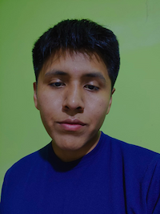

Cristian Paredes | WDD 130
Hi! My name is Cristian Paredes and I am from a little city in Bolivia called Tarija, I love playing soccer and drawing. I currently work as a customer service representative for Life Wireless.
Hi! My name is Cristian Paredes and I am from a little city in Bolivia called Tarija, I love playing soccer and drawing. I currently work as a customer service representative for Life Wireless.